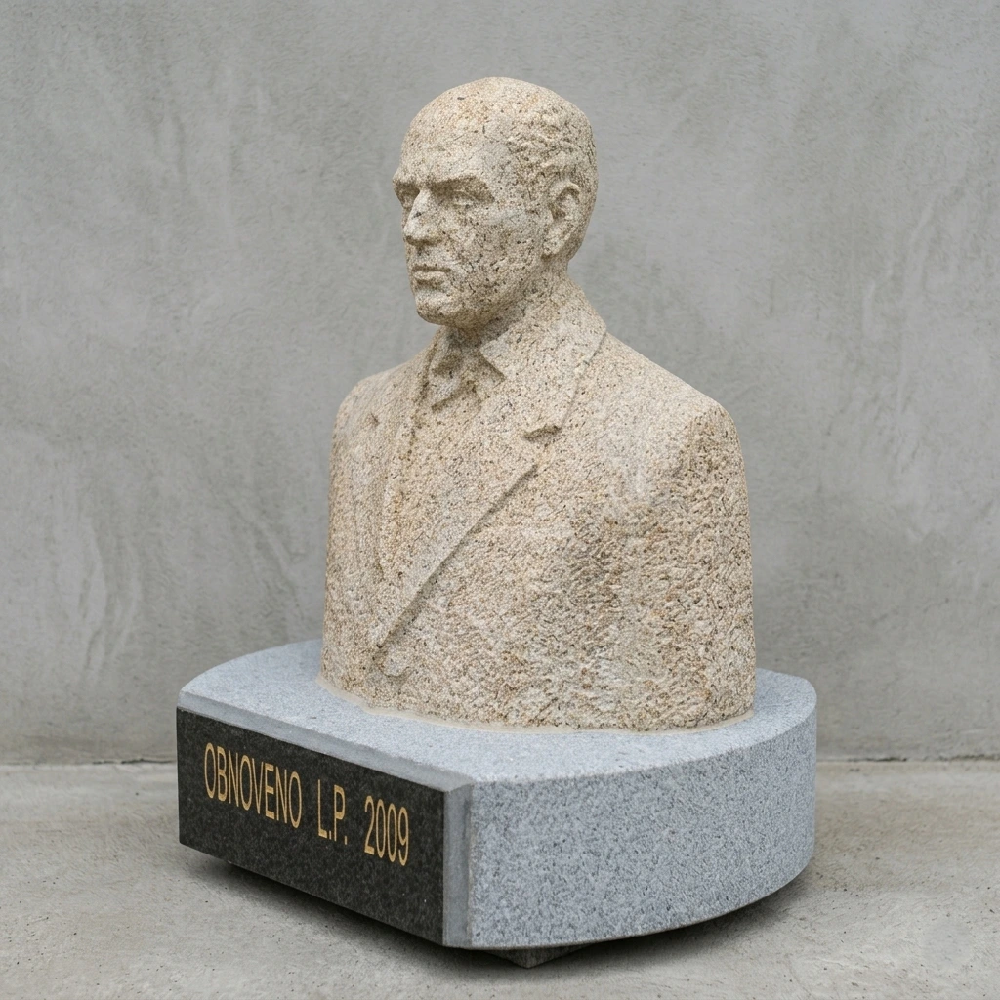
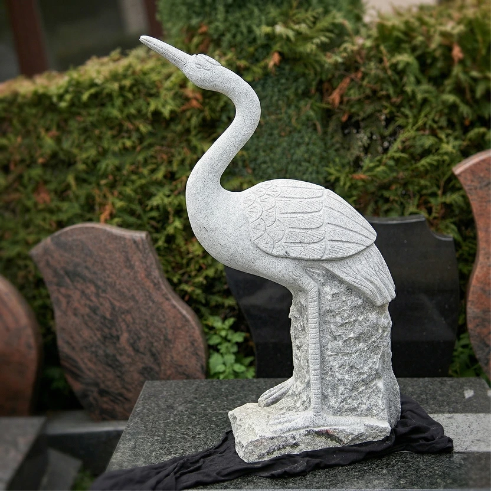
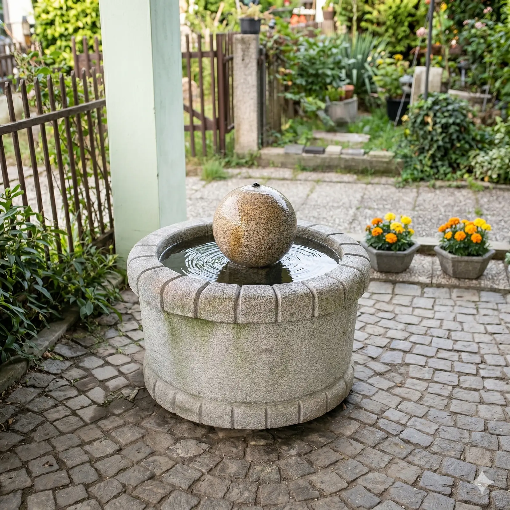
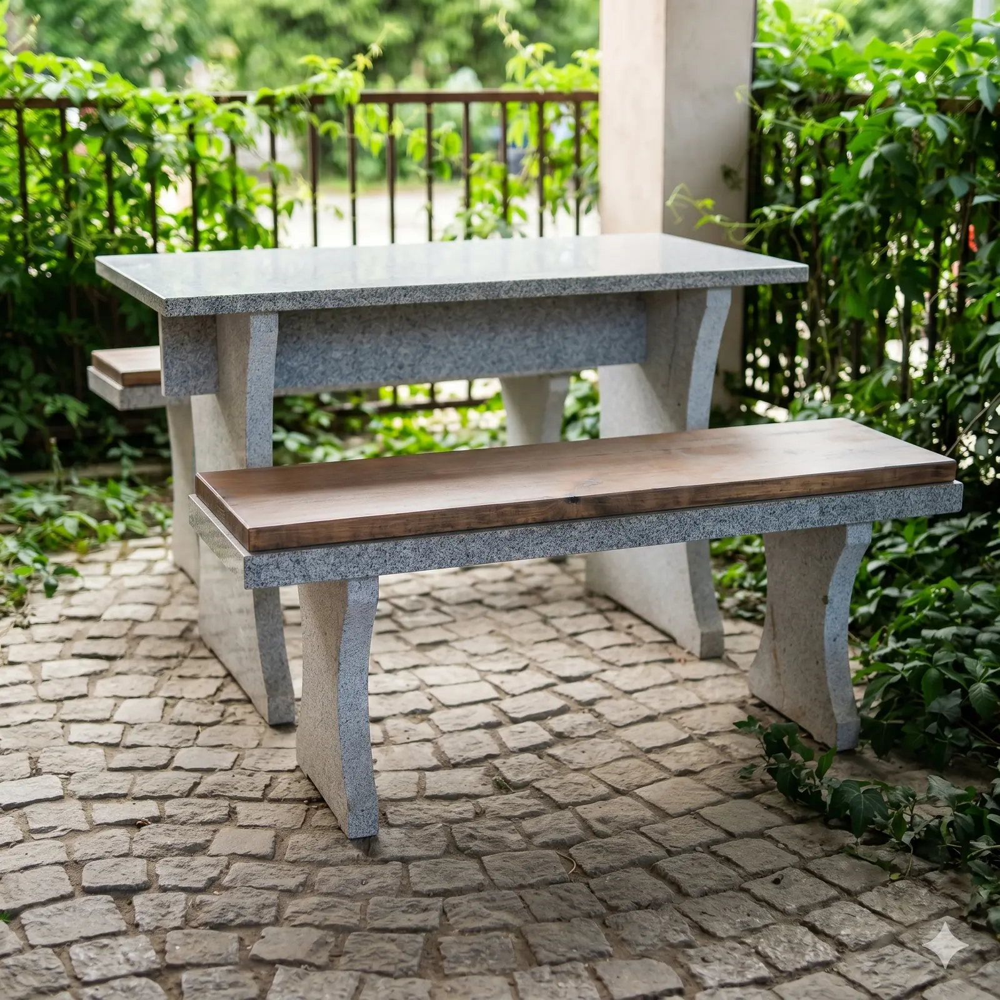

Ozvláštněte svou zahradu unikátními prvky z přírodního materiálu. Jsou odolné, snadno udržovatelné a dodají Vašemu exteriéru dotek trvalé krásy.
Zahradní doplňky se v posledních letech těší velké oblibě. Na přání zákazníků jsme začali vyrábět různé typy prvků pro výzdobu zahrad i parků. Unikátní kamenné prvky jsou nejen krásné na pohled, ale zároveň bezúdržbové a vysoce odolné proti přírodním vlivům.
Můžete si vybrat z našich typizovaných doplňků, jakými jsou kamenné želvy (na délku cca 40 cm), žáby (cca 50 cm), ale i sošky ptáků, zahradní kamenné stoly, menší fontánky a velké kašny.
Kamenné vodní prvky dodají Vaší zahradě uklidňující atmosféru a punc luxusu.
Ručně tesané sošky zvířat – žáby, želvy, ptáci i volavky k zahradnímu jezírku.
Navrhneme a vytvoříme Vám unikátní kamenný prvek přesně podle Vašich představ.
Zahradní prvky ze žuly nebo pískovce jsou odolné vůči povětrnostním vlivům a nevyžadují údržbu.

Kromě typických doplňků si u nás můžete nechat vyrobit na zakázku prakticky cokoliv. Sdělte nám, co Vám na zahradě chybí a jakou máte představu. Nemusí zůstat ani u zahrady, na zakázku děláme také například památníky či pamětní desky.
Na základě Vaší vize pro Vás vybereme vhodný materiál a navrhneme přesný vzhled. Následně vyrobíme unikátní kamenný doplněk s velkým důrazem na detail, který se stane naprostou chloubou Vašeho domova.
Poptat zakázkovou výrobuInspirujte se výběrem z našich realizovaných zahradních doplňků a sochařských prací.



Svěřte svůj projekt do rukou profesionálů. Kontaktujte nás a my pro Vás rádi připravíme nezávaznou kalkulaci na míru.